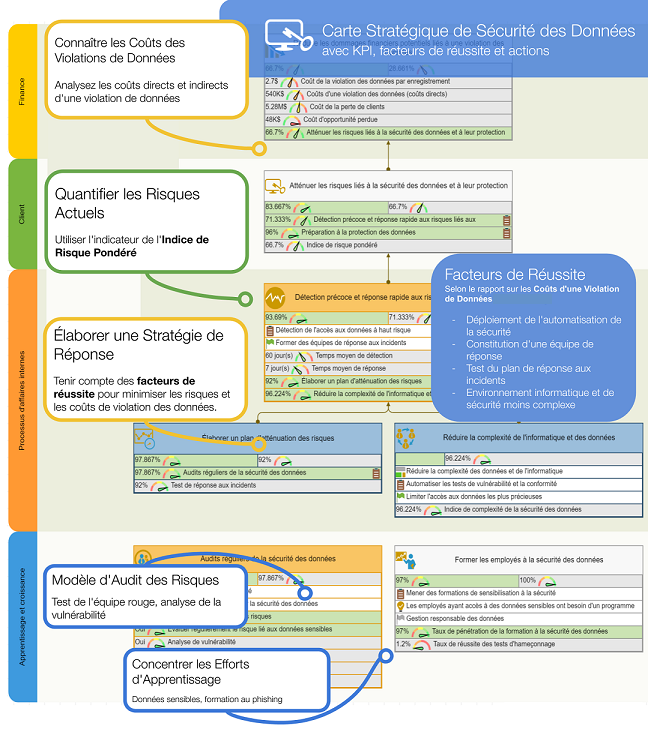
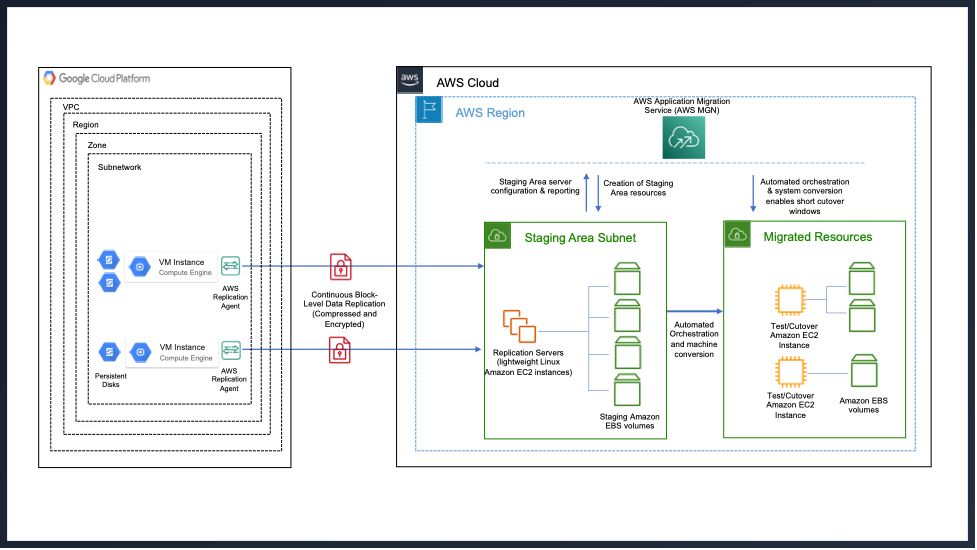
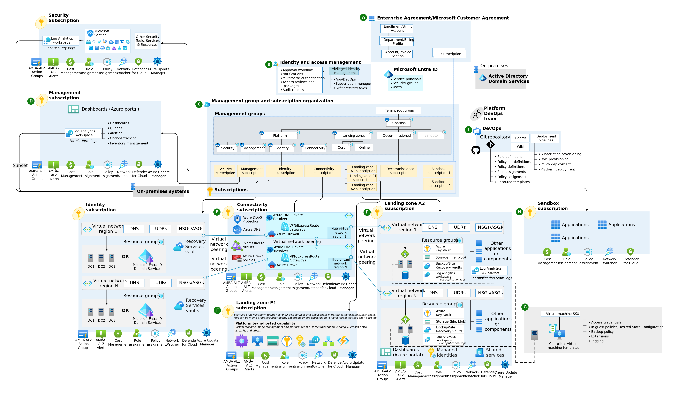

Domaine d'Activité
Realisation des audits IT complets et des stratégies d’évolution auprès d’ETI, grands groupes et acteurs réglementés.
Mon approche combine diagnostic technique, alignement stratégique métier et analyse économique (TCO, ROI, valeur métier).

Audits d’envergure (infrastructure, applicatif, data, sécurité, processus) avec cartographie exhaustive des écarts.
Spécialiste des revues Well Architecture Framework et Landing Zone assessments.
Je produis systématiquement des roadmaps claires sur 3 à 5 ans, priorisées par valeur métier et risque.
Expert en cartographie applicative et patrimoniale , j’identifie les quick-wins et les dettes techniques critiques.
J’ai défini des stratégies multi-cloud et hybrid pour des environnements critiques (financier, santé, énergie, retail)

Spécialiste des outils de migration : Application Migration Service, Database Migration Service, Workload Migrate vers Compute Engine.
J’ai migré des SI legacy monolithiques vers des architectures microservices et conteneurisées.

Je conçois et déploie des modèles de gouvernance Zero Trust dans les environnements critiques et réglementés.
Maîtrise des piliers : identity & access (MFA, Conditional Access, JIT, PIM), device trust, workload trust, network trust.
Fort expertise en FinOps & gouvernance cloud : tagging obligatoire, budgets, alerts, reporting, chargeback/showback.